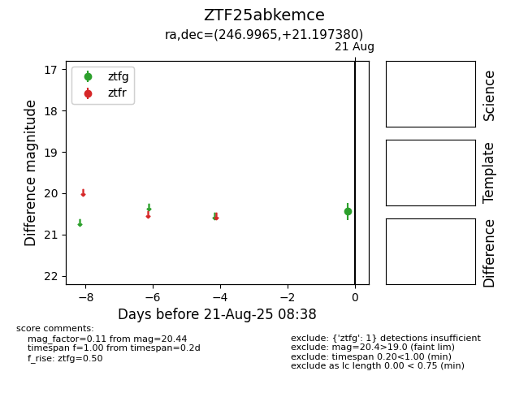

Target ZTF25abkemce at 2025-08-21 08:38, see:
FINK: fink-portal.org/ZTF25abkemce
Lasair: lasair-ztf.lsst.ac.uk/objects/ZTF25abkemce
ALeRCE: alerce.online/object/ZTF25abkemce
alt names
ZTF25abkemce (ztf,alerce)
coordinates:
equatorial (ra, dec) = (246.9965,+21.19738)
galactic (l, b) = (38.4309,+40.61673)
photometry
last ztfg=20.44
1 ztfg detections
